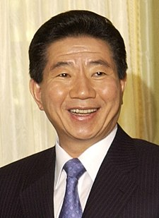

노무현(盧武鉉, 1946년 9월 1일 ~ 2009년 5월 23일)은 대한민국의 제16대 대통령이다. 본관은 광주(光州)이며 경상남도 김해 출생이다.
부산상업고등학교를 졸업하고 막노동에 뛰어들었다가 독학으로 1975년 3월 30세에 제17회 사법시험에 합격하였다. 대전지방법원 판사로 1년을 재직하다가 그만두고 부산에서 변호사 사무실을 개업하여 여러 인권 사건을 변호하였다. 통일민주당 총재 김영삼의 공천을 받아 제13대 총선에 출마하여 부산 동구에서 당선되며 5공비리특별위원으로 활동했다. 1990년 3당 합당에 반대하면서 김영삼과 결별한다. 김대중 정부에서 해양수산부 장관을 지냈고 국민경선제에서 새천년민주당 소속으로 제16대 대선에서 대통령으로 당선되었으나 2003년 말에 새천년민주당을 탈당하고 2004년 초 새천년민주당을 탈당한 개혁 세력들이 주축이 되어 창당한 열린우리당에 입당하였다.
2004년 무렵 공직선거 및 선거부정방지법이 정한 중립의무 및 헌법 위반을 시유로 야당에 국회로부터 대한민국 헌정 사상 최초로 대통령직 재임 중 탄핵 소추를 당해 대통령 직무가 정지되었다. 하지만 이후 탄핵을 주도했던 새천년민주당과 한나라당, 자유민주연합은 여론의 역풍에 휩싸여 제17대 총선에서 참패하였고 얼마 후 헌법재판소에서 소추안을 기각하며 노무현은 다시 대통령 직무에 복귀하였다.
주요 업적으로는 권력층에 만연해 있던 권위주의와 정경유착을 타파하고 기존 정권이 하지 못했던 각종 재벌 개혁을 시행한 것이 꼽힌다. 상속증여세의 포괄주의를 도입해 대기업 총수의 탈세 여지를 좁힌 것, 증권 관련 집단소송제를 시행한 것, 대기업 간 담합에 대한 적발과 처벌을 강화한 것 등이 높게 평가받는다. 임기 중 경제성장률은 4.42%로 OECD 평균성장률을 항상 상회했지만 역대 대한민국 정부 중 OECD의 성장률을 하회한 정부는 존재하지 않는다. 이러한 수치는 이후 이명박 정부의 2.9%와 박근혜 정부의 2.8%를 크게 상회하는 것이나, IMF의 발표 자료에 따르면 세계 경제성장률 대비 국내 경제성장률이 노무현 정부 -0.7%, 이명박 정부 +0.0%, 박근혜 정부 -0.5%로 나타났다. 노무현 정부는 골디락스 호황에도 불구하고 세계 경제성장률을 상회하지 못했고 도리어 이를 가장 크게 하회한 대한민국 정부로 기록되었다.
주요 실책으로는 정치적으로 친인척 및 측근비리, 사회적으로 교육 정책 및 부동산 정책의 실패, 경제적으로 양극화 심화에 따른 민생경제 파탄, 외교적으로 햇볕정책의 실패 등이 꼽힌다. 부동산 정책은 전반적으로 실패했다는 평가를 받았고, 1997년 IMF 외환위기 이후 노무현 정부에서 소득 분배 지표가 더욱 악화되어 서민경제의 파탄을 초래했다는 비판도 있다. 이러한 소득 불평등도는 이후 보수 정권 9년 간 완화되다가 문재인 정부 들어 역대 최악의 수치를 기록했다. 게다가 반미적 입장, 편협한 국수주의, 친북적 정책으로 인한 외교적 모순으로 국제사회에서 신뢰를 잃었다는 분석도 존재한다. 이렇듯 서민 생활과 직결되는 분야에서의 정책적 과오와 외교·안보에서의 실책으로 인해, 대통령 직무수행에 대한 여론 조사가 정례화 된 제6공화국 이래 노태우를 제치고 임기 평균 국정 지지율 최하위를 차지할 정도로 대중적인 지지가 부족했던 대통령으로, "이게 다 노무현 때문이다" 같은 유행어가 나올 정도로 재임 시 국민들에게 많은 원성을 듣고 대중적 인기가 부족했으며 적이 많았던 대통령으로 평가받는다.
구글에서 더 찾아보자 